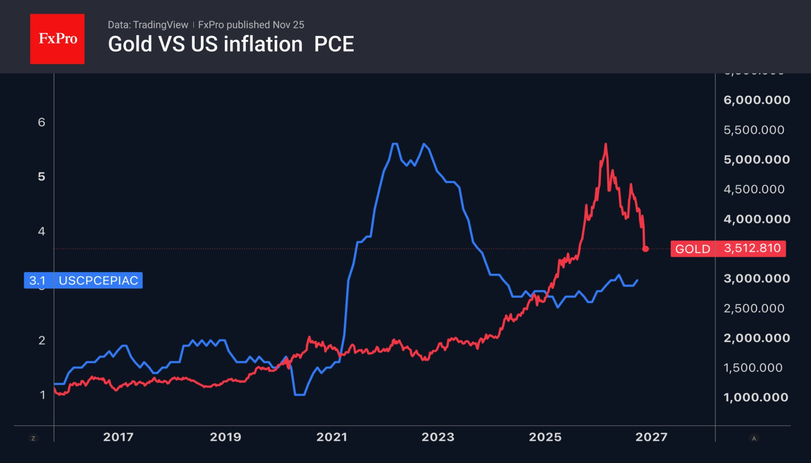

SEO
Meta Title: Gold struggles to find a floor near 15-month lows
Meta Description: Gold slid to $3,510, near 15-month lows. In our view, a hawkish Fed and fading interest in AI are preventing it from finding a floor.
Gold struggles to find a floor
- Fading enthusiasm for AI and the Fed's hawkish path are behind the slide in gold.
- Record Chinese bullion imports are doing little to help gold.
Gold has been hit by a double whammy of waning AI optimism and the Fed's hawkish path, while the equity rally sparked by Jensen Huang's return as Nvidia's chief executive gave the precious metal only temporary relief. Talk of higher White House tariffs has pushed gold back towards its lowest levels in almost 15 months.
When every piece of news, good or bad, becomes a reason to sell, an asset's fate is sealed. The view that gold has limited room to rebound ahead of the expected December hike in the federal funds rate is gaining ground, and Natixis believes the precious metal could slump to $3,340 an ounce as the Fed steps up its tightening and demand for physical gold weakens.
Gold bulls are pinning their hopes on the well-known commodity-market adage that the cure for low prices is low prices. As prices fall, the argument goes, demand will pick up, just as it is doing in China. Beijing has imported a record $209 billion of bullion since the start of the year. Non-monetary gold purchases have risen for ten consecutive months, reaching a record high of almost 8% of total imports.
However, shrinking investment demand suggests prices are not yet low enough. ETF outflows in the week to 20 November totalled 20.4 tonnes, the largest since June. Investors have pulled money out of these exchange-traded funds during three of the past five weeks, leaving November on course for the first monthly outflow in five months. China, meanwhile, is stepping up bullion imports for perfectly understandable reasons. Without them, its trade surplus would have passed the $1 trillion mark as early as September, which would have angered Washington and raised the risk of higher tariffs.
Gold traders will be watching October's US personal consumption expenditures (PCE) price data, the Fed's preferred inflation gauge, closely. A pick-up would raise the risk of three rate hikes by the end of 2027, which would deal a blow to gold. Conversely, a slowdown in PCE inflation would give the precious metal a chance to find a floor.
Investor appetite for AI matters just as much for gold. If it fades, the precious metal risks being sold off as a source of liquidity for the stock market.
What to watch
Base case: in our view, as long as the Fed stays on a hawkish path and interest in AI fades, any news will be used as a reason to sell gold.
Risk: a slowdown in PCE inflation and lower odds of Fed tightening would give the precious metal a chance to find a floor. Consolidation above $3,900, where the decline accelerated early last week, would signal a reversal to the upside.
Upcoming: October PCE data today; US Thanksgiving on 26 November; the Fed decision on 9 December. Check the economic calendar for more events.
The FxPro Analyst Team
Charts

Source: TradingView, as of 25 November 2026.
Alt text: Line chart from 2016 to November 2026: the gold price (red line, right scale) has fallen to $3,510.47 from a peak near $5,300, while the US federal funds rate (blue line, left scale) stands at 4%.

Source: TradingView, as of 25 November 2026.
Alt text: Line chart from 2016 to November 2026: the gold price (red line, right scale) at $3,512.81 after retreating from a peak near $5,300, and US annual PCE inflation (blue line, left scale) at 3.1%.
Links
- the Fed's hawkish path → "As the AI bubble deflates, so do hawkish dollar bets", 23.11.2026 → https://fxpro.news/market-overview/as-the-ai-bubble-deflates-so-do-hawkish-dollar-bets/
- Jensen Huang's return → "A dead cat bounce in the Nasdaq-100?", 24.11.2026 → https://fxpro.news/market-overview/a-dead-cat-bounce-in-the-nasdaq-100/
- Talk of higher White House tariffs → "Commodity currencies part ways", 25.11.2026 → https://fxpro.news/market-overview/commodity-currencies-part-ways/
- gold (instrument page) → https://fxpro.news/quotes/gold/
- its lowest levels in almost 15 months → "Weekly round-up: dollar takes a step back, S&P 500 faces a key test, gold and Bitcoin in a nosedive", 19.11.2026 → https://fxpro.news/market-overview/weekly-round-up-dollar-takes-a-step-back-sp-500-faces-a-key-test-gold-and-bitcoin-in-a-nosedive/
- ETF outflows → "Silver is sinking", 18.11.2026 → https://fxpro.news/market-overview/silver-is-sinking/
- Check the economic calendar for more events. → https://fxpro.news/economic-calendar/